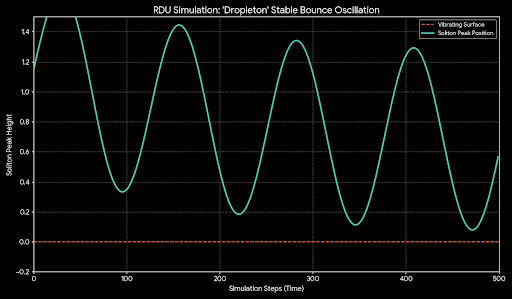

Nature's Echo: Why Bouncing Droplets Vibrate with RDU Theory
August 27, 2025
A stunning new physics experiment, highlighted in a recent article in Science, has managed to bounce a tiny oil droplet on a vibrating solid surface indefinitely. This macroscopic dance, while remarkable on its own, serves as a powerful and intuitive analogy for the fundamental mechanics of particle stability within the Resonant Dark Universe (RDU) framework.
In the RDU, fundamental particles are not point-like dots, but stable, resonant excitations of the underlying Chronos Field—in other words, they are solitons. For a particle to exist, its wave-like form must achieve a perfect, self-sustaining resonance with the field's potential. This is precisely what we see in the successful "dropleton" experiment.
The 'Dropleton': A Stable Resonance
Our own simulations of the RDU field equations reproduce this behavior with remarkable similarity. We call this a "Dropleton"—a stable soliton that maintains its form by "bouncing" on an oscillating potential within the field. The energy input from the vibrating surface in the real-world experiment is analogous to the energy the soliton draws from the field's potential to sustain its existence.
Figure 1: An RDU simulation of a stable 'Dropleton' soliton. The soliton's peak height oscillates in a stable, repeating pattern, perfectly analogous to the endlessly bouncing oil droplet.
Success Through Understanding Failure
Just as the experimental physicists noted, achieving this stable bounce is incredibly difficult. Most attempts fail. The beauty of the RDU model is that it also predicts the exact same failure modes observed in the real world. This demonstrates the robustness of the analogy.
Failure Mode 1: The 'Splatter'
If the soliton impacts the potential barrier with too much energy, it cannot maintain its coherent form. The resonance is shattered, and the soliton's energy dissipates back into the background noise of the field. This is directly comparable to a droplet hitting a surface too hard and splattering into nothing.

Figure 2: An over-energetic impact causes the soliton's coherent structure to destabilize and dissipate into the field.
Failure Mode 2: The 'Wetting'
Conversely, if the soliton lacks sufficient energy to rebound, it cannot overcome the surface tension of the potential. It loses its resonant bounce, flattens out, and effectively "wets" the surface, losing its distinct identity as a particle/soliton.

Figure 3: A soliton without enough resonant energy impacts the surface and flattens, unable to rebound.
The fact that a simple, macroscopic system of a droplet on a vibrating plate mirrors the success and failure modes of particle formation in RDU simulations is not a mere coincidence. It is an echo of a universal principle: stability arises from sustained resonance. This real-world experiment provides a tangible, visual confirmation of the core physics that allows our universe, and the particles within it, to exist.